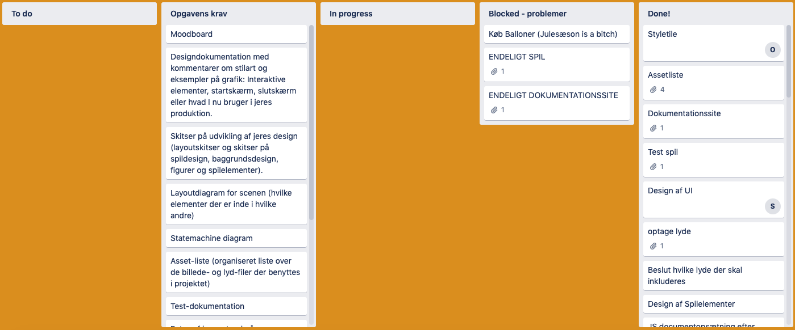
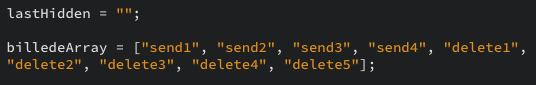
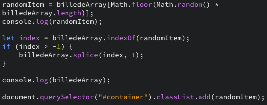

I denne opgave skulle vi i grupper designe og kode et spil. Til opgaven arbejdes der med en case fra sex og samfund og spillet skal kunne løse casens problemstilling. Den givne case er at sex og samfund ønsker at informere unge i alderen 13-15 år om reglerne for billeddeling på nettet. For at ramme målgruppen bedst skulle designet testes på en teenager.
I projektet blev vi introduceret til udviklingsprocessen scrum og benyttede dele af denne i arbejdet med opgaven.
Desuden arbejdede med selve spillet øvede vi vores færdigheder indenfor html, css og JavaScript, desuden tilegnede vi os ny viden om specielt JavaScript.
I forløbet blev vi introduceret til scrum som projektstyring, vi benyttede dog kun dele af scrum til vores arbejde. Det vigtigste var at vi arbejde med tasks, der i vores projekt skulle estimeres til max en time. Vores tasks blev sat ind på et online scrum board, der var delt op i ”to do”, ”in progress”, ”blocked” og ”done”. På den måde sikre man at hele holdet har overblik over hvilke opgaver, der skal udføres og hvilke der allerede er påbegyndt.
Vi benyttede os desuden af et Burndown chart, der giver overblik over antallet af tilbageværende opgaver.
Den vigtigste måde vi benyttede scrum var dog i forhold til daily scrum. Alle grupper havde en udvalgt scrum master der faciliterede et daily stand up scrum møde for gruppen, her fortæller gruppens medlemmer hvad de har lavet dagen før, hvad de skal lave i dag og hvilke problemer de eventuelt har. Da vi er en stor klasse og alle ikke kan deltage i et samlet scrum møde, blev der efter gruppens daily scrum afholdt scum af scrum, hvor gruppernes scum masters holdt scrum og fortalte om gruppens samlede progress.
Til spillet skulle udvikles et ensartet design, der appellerede til målgruppen i den forbindelse, udvalgte vi 3 stilarter vi tænkte kunne fange målgruppen, men også stilarter vi mente vi selv kunne designe artwork i.
Herefter blev de 3 stilarter præsenteret for en teenager, der gav sin mening til kende i et semistruktureret interview. Vi fandt frem til at vores teenager foretrak den realistiske flatdesign stil, som vi derefter arbejde videre med.
Spillets farve pallette blev valgt udfra sex og samfunds allerede eksisterende farver, da vi ønskede at skabe en naturlig sammenhæng mellem de to.
Måden vores spil fungerer på er at der vises et billede på skærmen, spilleren skal så beslutte om billedet skal slettes eller deles. Her vil jeg forklare hvordan de mest interessante dele af JavaScript koden fungerer:
Vi ønsker at vise spilleren et tilfældigt billede og når spillet har trykket, skal der vises et nyt billede, dog ikke det samme billede. Dette er gjort på følgende måde:
Billederne er med css tilføjet som bagrunde til hver sin class, på den måde kan de sættes på containeren ved at tilføje classen.
Der er derefter lavet et ”billedeArray” med de mulige classes.
Øverst på siden laves nu en global variabel ”randomItem” og det er nu tid til at tildele den en class fra arrayet. Dette gøres med en ”math.random”, der ganges med arrayets længde i stedet for et tal da længden vil ændre sig. For at sikre at det samme billede ikke vises flere gange skal det slettes fra arrayet. Til sidst tilføjer jeg ”randomItem til containeren, hvilket gør at billedet vises.
Dette er en global variabel, der hovedsageligt bruges til at simplificere koden. Formålet med variablen er hurtigt at kunne sætte classen ”hide” tilbage på et element man har fjernet det fra uden først at skulle identificere elementet. Variablen benyttes i funktionerne ” winSoundEnded”, ” looseSoundEnded” og ”gameTjek” Først ses det at variablen sættes lig den tekstcontainer, der vises ved at fjerne ”hide”.
Det gør at ”hide let kan tilføjes til ”lasthidden”, eller den tekstcontainer der bliver vist, når den skal gemmes igen i funktionen ”gameTjek”.